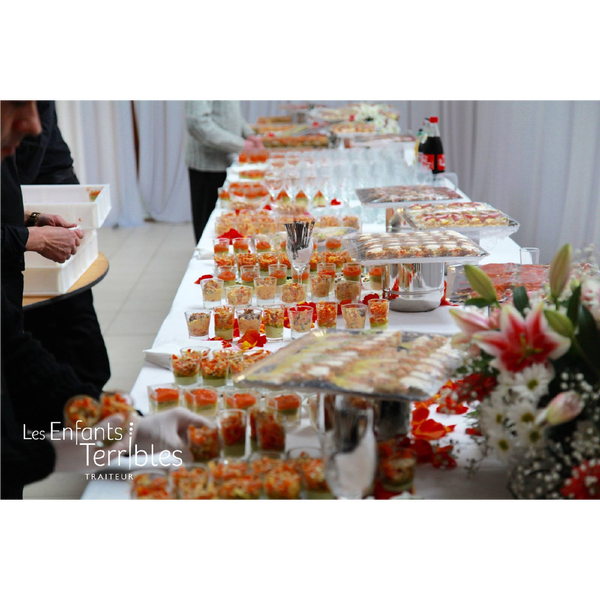

Les enfants Terribles - Traiteur
Traiteur
SPIRIT, Parc des 6 routes, 63 Av. du Général Leclerc, 93120 La Courneuve
Un bouillon d’idées, une louche de créativité, une pincée de passion,
le tout saupoudré de raffinement :
Les Enfants Terribles est un traiteur renommé qui prend un véritable plaisir à concocter la recette du succès de vos mets,
avec la qualité qui fait sa notoriété et le dévouement permettant aux mariés de déguster des plats à leur goût, le jour de leur festivité.
Connu pour sa cuisine Halal typiquement française, les prestations de ce traiteur inventif sont adaptables à vos envies.
Une équipe expérimentée mettra son savoir-faire au profit de votre cérémonie de noce afin que vous bénéficiez d’un banquet de haut niveau le jour J.